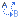
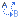

You can change the look, size and color of your text.
The first step is to select and highlight the text you want to format. Then select the Icon.
Font Color
Bold
Custom Character ®
Alignment - This aligns the selected text to the:
Creating Web Page Content
FROM THE EDITOR WINDOW
-
SET OR CHANGE FONT characteristics
- insert Tables
- insert Ruler lines
- Handy UTILITY ICONS
- Email hyper link
- hyper link TO A WEB
page
- INSERT IMAGES
CREATE CONTENT "OFF LINE" THEN INSERT TO EDITOR WINDOW
- Using WINDOWS Note Pad
- Using MS Word
Uploading Images and Files
*
- Uploading
* You, the User, may or may not have the ability to upload, based on how
the User is set up by the administrator.
You can change
the look, size and color of your text.
The first step is to select and highlight the text you want to format. Then
select the Icon.
Font Color  Back Ground Color
Back Ground Color
Bold  Italic Underline
Italic Underline

Strike through  Sub
Script
Sub
Script  Super
Script
Super
Script
Custom
Character ®
Alignment - This aligns the selected text to the:
 Left
Center
Left
Center
 Right
Right
 Full
Full
-- Styles --
-- Format -- Select from the Drop Down List
Paragraph, Address, Preformatted, Heading 1 - 6 (1 = large, 6 = small)
-- Font Family -- Select from the Drop Down List
-- Font Size -- Select the font style from the Drop Down List
Unordered Bulleted Lists
Enter some text on the first line, SHIFT-ENTER (this will move you to the next
line)
Enter some text on this line, SHIFT-ENTER (this will move you to the next line)
Enter some text on this line, SHIFT-ENTER (this will move you to the next line)
Enter some text on this line, SHIFT-ENTER (this will move you to the next line)
Hit enter twice to end the list.
qqqqq
wwwww
eeeee
rrrrr
Now, Select all the above text, and click this Icon
The results will be:
This is a Ordered list. (enter text as above but now click this Icon  )
)
qqqqq
wwww
eeeee
Top of page
Tables are an extremely powerful tool for laying out data
and images on an HTML page. They provide you with a way to add vertical and
horizontal structure to your page. To insert a table:
Click where you want the table to appear
Click the  Insert
a new table
Insert
a new table
Specify the number of rows
Specify the number of columns
Cell Padding, specify the number of pixels between the cell
content and the cell wall
Cell Spacing, specify the number of pixels between each table
cell
Width, specify the width of the table as a number of pixels
("550") or
as a percentage ("75%") of the browser window.
When you create a table, (rows and columns) this creates "guidelines"
in the editor window.
You can "Toggle" these guidelines/invisible elements by
using this Icon --->
Toggle guidelines/ invisible elements
Changing Tables - Once you have created a table, these buttons will allow you
to change the tables configuration.
Cell
properties  Table
row properties
Table
row properties
Add or Delete a row to the table
 Insert row before
Insert row before  Insert row after
Insert row after  Delete row
Delete row
Add or Delete a Column to the table
 Insert column before
Insert column before  Insert column
after
Insert column
after  Delete
column
Delete
column
To merge cells click in the cells you want to merge, holding down the shift
key (the cells must be adjacent to each other).
Click the  Merge
table cells to combine selected cells, rows, or columns, creating one cell
Merge
table cells to combine selected cells, rows, or columns, creating one cell
To Split cells Click in the cell you want to split
Click the
Split cells to divide a cell, creating two cells.
To delete a table click the Delete
table
Top of page
 Insert/edit Horizontal Rule
Insert/edit Horizontal Rule
Select the Width as x, px (pixels) or %
Select Height as Normal or 1 through 7
A horizontal ruler line, width=50% and Height of line is 4
HANDY UTILITY ICONS
Cut
selected,  Copy,
Copy,
 Paste
Paste
Note: using the Fire Fox browser, Copy and Paste may not function. See below
for a little Fire Fox "trick".
 Search,
Find
& Replace, Clean
Up code,
Search,
Find
& Replace, Clean
Up code,  Edit htm source
Edit htm source
 Remove
format code,
Remove
format code,  Un
do,
Un
do,  Re do,
Re do,  Un
link
Un
link
 Toggle
full screen mode,
Toggle
full screen mode,  Editor
version and credits
Editor
version and credits
Fire Fox "trick" to Copy and Paste (Cut & Paste) within the Editor
window.
Select the text.
Then from your Key Pad, CTRL+C will COPY text
Move insertion point
Then from your Key Pad CTRL+V will PASTE text
To Cut and Paste: CTRL+X will Cut text
Top of page
EMAIL HYPER LINK
Enter text first, like "Email Gene", select this text.
Click this Icon
Insert/Edit Link
At the Link URL text box, enter mailto:aaaaa@bbbbb.com then click the "Insert"
button.
(mailto colon then the full email address)
The words Email Gene will now be a mailto hyper link to his email address.
Top of page
HYPER LINK TO A WEB PAGE
Highlight the text you want to link from
Click the
Insert/Edit Link
General tab
Link URL: use the "browse" Icon  to select page from your server. *
to select page from your server. *
Link URL: if you can not "browse" type the address
in starting with http://www.
Link URL: if page is not on your server simply type the address
in starting with http://www.
Anchors: not required if link is to a full page (see below
for Anchor)
Target: select from list, "open in this window is most
typical"
Title: This will be the mouse over text
Class: not required
Pop Up tab: optional
Events tab: optional
Advanced tab: optional
Click the "Insert" button
Anchor
An Anchor is a text hyper link in your web page TO a section or line in the
same web page.
Example: say, if at the top of your web page you have Chapter 1, Chapter 2,...
and wish to link the text "Chapter 2" to the area of the page detailing
Chapter 2.
First: select the destination text within your file. (the TO)
Click this Icon  Insert/edit
anchor. (Enter a anchor description like Chapter 2 )
Insert/edit
anchor. (Enter a anchor description like Chapter 2 )
Second: At the top of your web page, the "Chapter 2",
link this to the the anchor name by selecting it from the General tab, Anchors:
Drop Down list.
* You, the User, may or may not have the ability to browse, based
on how the User is set up by the administrator.
Top of page
INSERT IMAGES
You can add images to your web contest.
Click on the page where you want the image to be placed
Click this Icon  Insert/edit
image
Insert/edit
image
General tab
Image URL: use the "Browse" Icon  to select image from your server. *
to select image from your server. *
Image URL: enter the full URL to the image file
Image Description: Enter a description of image (optional)
Image Title: This will be the mouse over (optional, but suggest
you use )
Appearance tab
Optional
Advance tab
Optional
Click the "Insert" button
* You, the User, may or may not have the ability to browse, based
on how the User is set up by the administrator.
Top of page
UPLOAD FILES *
Click the "upload" link located at the top of the page.
From the Pop Up Window, at the Destination Drop Down list, select the folder
name
(where the file will be uploaded to).
Then from the File text box, click the "Browse" Icon 
You can now browse your computer and files.
Click the "OK" button.
This file is now available to be inserted at the Editor window (image file),
or you can link to the the file.
* You, the User, may or may not have the ability to Upload, based
on how the User is set up by the administrator.
CREATE CONTENT "OFF LINE" USING WINDOWS NOTE
PAD.
On your computer, using a ascii text program like Windows Note Pad.
Start-Programs-Accessories-Note Pad
Enter your text on as many lines as you need, do NOT use the File-Font.
File-Save Name and save this file as anyfilenameyouwant.txt on your computer
at any folder.
Select ALL the text from this filename using your Mouse and then File-Copy.
(this will place ALL the text into your Windows Clip Board)
Log in to the program and open the *.htm, you will see the Editor window.
Set the insertion point using your mouse. (at the top of Editor window)
Select this Icon
Paste as Plain Text.
Set the insertion point with your mouse at the top of the Pop Up Window.
Do not turn "off" the Check box, Keep Linebreaks.
From your Key Pad, CTRL+V (this will Paste the text from your Windows Clip Board)
Click the "Insert" button.
You can now select some text and use the Editor Icons as required, like Bold,....
Top of page
CREATE CONTENT "OFF LINE" USING WINDOWS MS
WORD.
On your computer, using your existing MSWord *.doc file.
You can use all the MS Word's short cut Icons, like Bold, to format your
text.
Select ALL the text from this filename using your Mouse and then File-Copy.
(this will place ALL the formatted text into your Windows Clip Board)
Log in to the program and open the *.htm, you will see the Editor window.
Set the insertion point using your mouse. (at the top of Editor window)
Select this Icon  Paste from Word.
Paste from Word.
Set the insertion point with your mouse at the top of the Pop Up Window.
From your Key Pad, CTRL+V (this will Paste the formatted text from your Windows
Clip Board)
Click the "Insert" button.
You can now select some text and use the Editor Icons IF required, like Bold,....
Top of page